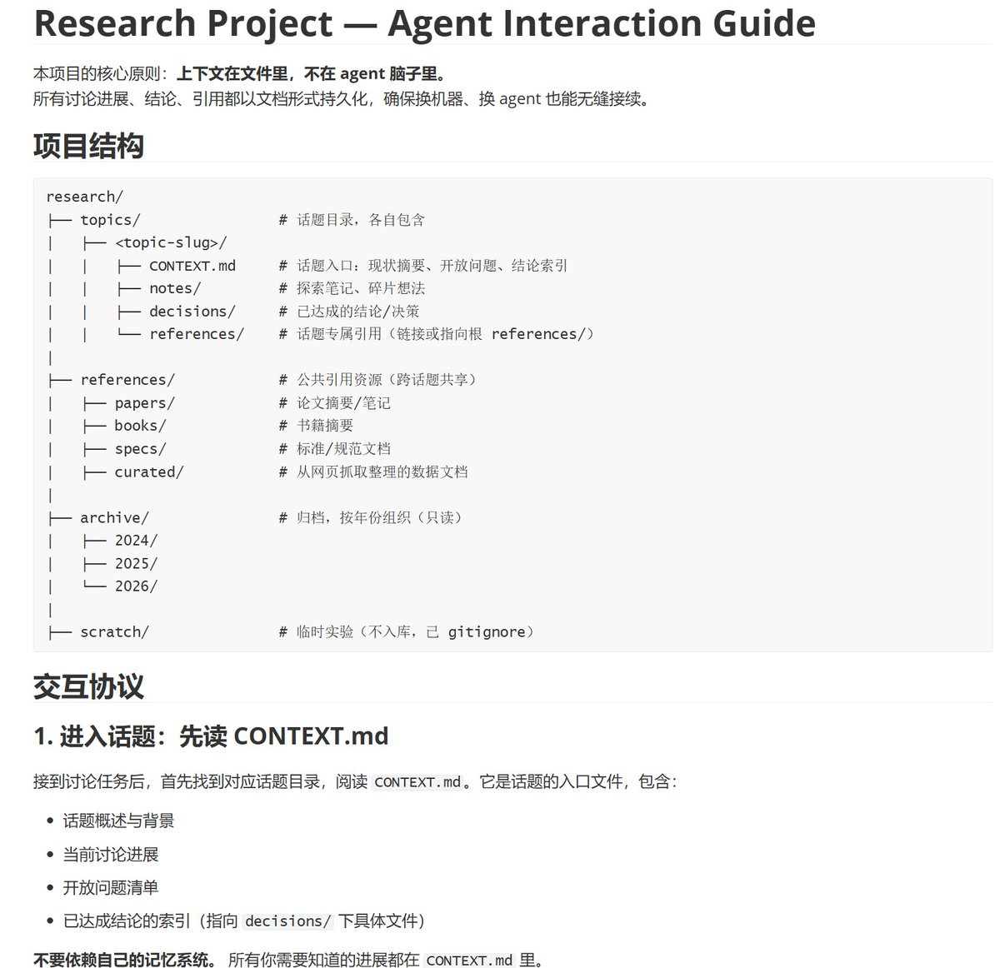

👾𝓽𝓱𝓮𝓯𝓸𝓻𝓮𝓿𝓮𝓻𝓲𝓻𝓲𝓼🍥
@theforeveriris
@skywind3000 这种文件记忆系统我也做过，其实还是相当有局限性的

LIN WEI
@skywind3000
分享下我的手工记忆系统：更好的同 AI 讨论问题，记忆不依赖 agent，而是全部记录在 git 上，同一个话题随便新开会话继续讨论，换机器，换 agent 软件都没问题，最终形成个人长期知识库；规则 AGENTS.md 如下： https://t.co/9mwZXuSbJ7 https://t.co/Io884EeYGj